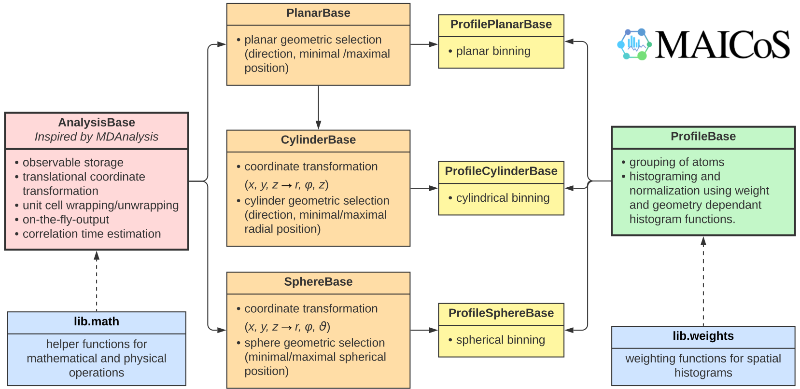

General design¶
Foundation¶
MAICoS analysis modules are built on top of stacked Core classes as shown in the UML chart above. For spatial dependent analysis, these are split into the geometries:
Each sub class inherits attributes and provides geometry-specific methods and
attributes. The flow chart is shown in the figure above. The foundation for all these
classes is AnalysisBase, inherited and extended
from MDAnalysis.analysis.base.AnalysisBase. AnalysisBase takes case of the general aspects of each analysis,
which will be discussed in detail below:
Atom Selection - MAICoS builds on top of the MDAnalysis Universe and atom selection system, therefore all analysis modules work only on subsets of the whole simulation. This allows investigating different species components individually, for example splitting the contributions of solvent and solute to a single observable. Moreover, many MAICoS analysis modules are able to process several atom selections from one simulation within one analysis run by providing a
listof atom selections. This reduces I/O loads and operations and gains a speed up for the analysis.
Translational coordinate transformations and unit cell wrapping - MAICoS works with a reference structure denoted by
refgroupwhich center of mass (com for short) serves as the coordinate origin for every analysis. MDAnalysis’s cell dimension and coordinates range from 0 toLwhereLis the dimension of the simulation box. Therefore, MAICoS defines the origin at the center of the simulation cell.Within each frame of the analysis, the
refgroup’s com is translated to the origin and all coordinates are wrapped into the primary unit cell. Additionally, it is possible to unwrap molecules afterwards since some analysis require whole molecules (e.g. dielectric). With this centering, the investigation of systems that translate over time is made possible, such as for example soft interfaces or moving molecules. However, users are not forced to give arefgroup. If no such reference structure is given, MAICoS takes the frame specific center of the simulation cell as the origin.User-provided ranges for spatial analysis are always with respect to the
refgroupand not in absolute box coordinates. For example, a 1-dimensional planar analysis ranging from -2 (Å) to 0 considers atoms on the left half space of therefgroup.Trajectory iteration - Each module implements an initialization, a prepare, a single frame and a conclude method. The
AnalysisBasewill perform an analysis that is based on these provided methods. It is possible to provide an initial and final frame as well as a step size or to analyse individual frames.Time averaging of observables - For observables that have to be time-averaged,
AnalysisBaseprovides a frame dictionary. Each key has to be updated within the (private)_single_framemethod and the mean and the variance of each observable will be provided within ameanand avardictionary. Each key name within these two dictionaries is the same as within the frame dictionary.On-the-fly output - MAICoS is able to update analysis results during the analysis. This can be particularly useful for long analysis providing a way to check the correctness of analysis parameters during the run.
Correlation time estimation - For the calculation of the mean and the standard deviation, MAICoS assumes uncorrelated data to compute reasonable error estimates. Since users may not know the correlation time within their simulation, MAICoS estimates correlation times for representative observables and warns users if their averages are obtained from correlated data. The correlation analysis gets handled by
AnalysisBaseif thesingle_framemethod of the used class returns a value to perform the analysis on. You can find general info about which class uses which observable for the analysis below, and more detailed information in the API documentation. The correlation time gets calculated using thecorrelation time function. The generation of warnings for the users gets handled by thecorrelation analysis function.For dielectric analysis, MAICoS uses the total dipole moment parallel to the direction of the analysis. For other spatial-dependant analysis, the correlation time is estimated from the central bin of the refgroup; in the center of the simulation cell. This translates to the middle bin of the profile for planar analyses and the first bin for cylindrical or spherical profiles.
Spatial Dependent Analysis¶
Spatial dependent analyses are crucial for interfacial and confined systems. Based on
the AnalysisBase in combination with a
ProfileBase class, MAICoS provides intermediate
Core classes for the three main geometries:
These modules take care of the coordinate transformations, of the spatial boundaries, and of the spatial resolution of the analysis.
A design concept of MAICoS for spatial analysis is that the user always provides the spatial resolution via the bin_width parameter rather than a number of bins. Therefore, the same analysis code is easily transferable to different simulation sizes without additional considerations about the spatial resolution.
Based on the three geometric base classes, three corresponding high level classes are provided:
When developing a new analysis class based on one of theses three classes, only a single weight function has to be provided. All current Weighting functions are documented. For instance, the atomic weight could be the masses, thus resulting in mass density profiles as done in DensityPlanar, atomic or molecular velocities as for VelocityPlanar, or the dipolar orientations as used by the DiporderPlanar class.
More details on each base class are given in the API documentation. For detailed information on the physical principles of each module consider the following sections.